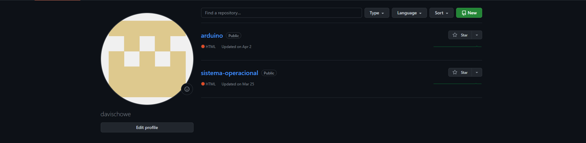

Repositorio
É um lugar onde você pode armazenar seu código, seus arquivos e o histórico de revisão de cada arquivo.

Deploy
Implantação é a fase do ciclo de vida de um software, no contexto de um Sistema de Informação, que corresponde textualmente à passagem do software para a produção. O processo de implantação universal consiste de várias atividades intercaladas como possíveis transições entre elas.